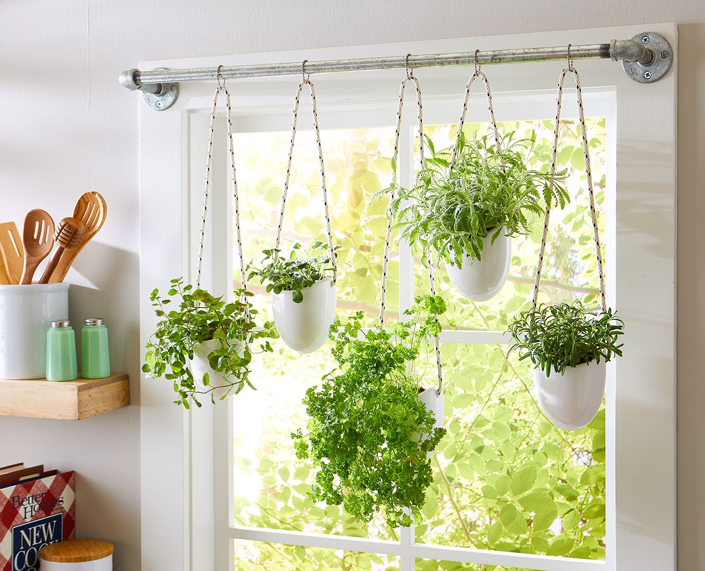

DIY Gardening: How to Start a Simple Indoor Herb Garden
Nothing beats fresh herbs in your cooking, and creating your own herb garden indoors is easy
and fun! This DIY project is great for beginners and requires just a few simple supplies
Materials Needed:
- Small pots or containers
- Good-quality potting soil
- Herb seeds or young plants
- Water
Steps to Create Your Indoor Herb Garden:
- Choose small pots or containers for your herbs.
- Fill the pots with good-quality potting soil.
- Plant seeds or young plants in each pot, following the instructions on the plant label.
- Place your herb garden in a sunny spot.
- Water regularly, and soon you'll have fresh herbs ready to use in your cooking!